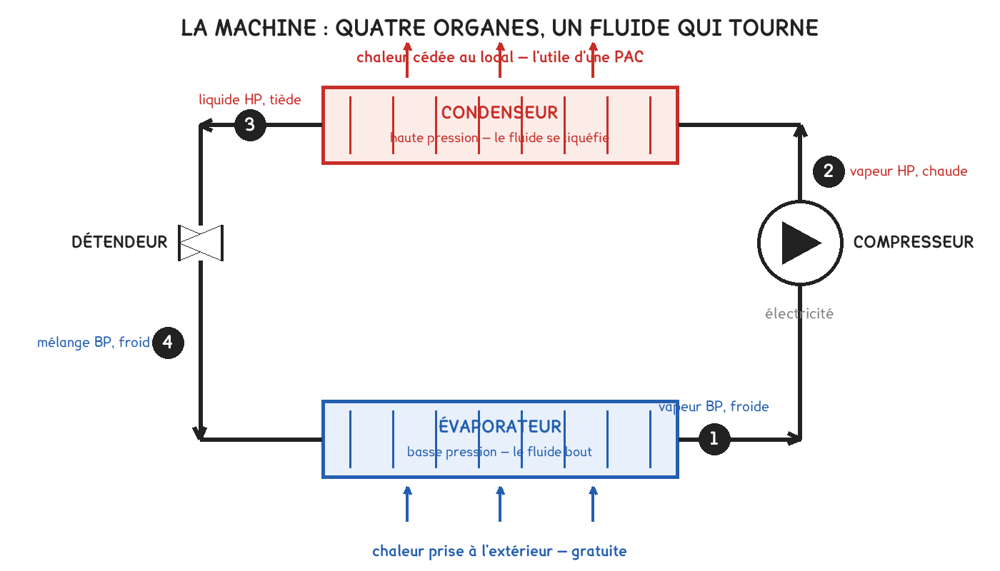

BTS FED option C · 2e année
Comment une machine restitue quatre fois ce qu'elle consomme sans rien inventer, pourquoi son COP s'effondre exactement quand on a froid, et où placer le point de bivalence.
1 outil · 13 questions · 4 exercices · 5 replis · 4 figures
Savoirs travaillés
Ce que l’option C ne demande pas. Le référentiel place les compresseurs, les détendeurs, les huiles et les fluides frigorigènes aux niveaux 0 et 1. Ce chapitre traite donc la PAC comme un générateur, savoir B1-1 au niveau 3, et non comme un cours de frigoriste.
Passez la main derrière un réfrigérateur : la grille est chaude. La machine n’a pas détruit la chaleur de vos aliments, elle l’a déplacée, du froid vers le chaud, ce que la nature ne fait pas toute seule.
Une pompe à chaleur est exactement cette machine, avec deux différences : elle est plus grosse, et c’est le côté chaud qui nous intéresse. Le froid produit, elle le rejette dehors ; c’est le radiateur du fond du frigo, à l’échelle d’une maison.
Déplacer de la chaleur coûte moins que la fabriquer. C’est la raison d’être de la machine, et le rapport se mesure : il s’appelle COP.
COP = Φ restituée / P électrique absorbée
Un COP de 4 signifie : 1 kWh d’électricité, 4 kWh de chaleur. Les 3 autres ont été pris dehors, ils n’ont pas été créés.
Le bilan qui vérifie tout : Φ condenseur = Φ évaporateur + P compresseur
Un COP de 4 se lit donc aussi : 3 unités prises dehors, 1 unité électrique, 4 unités livrées.
Le fluide fait le tour d’un circuit fermé et change deux fois d’état. Rien d’autre ne se passe.
| Organe | Ce qu’il fait | État du fluide |
|---|---|---|
| Évaporateur | prend la chaleur dehors | liquide → vapeur, à BP |
| Compresseur | élève la pression | vapeur BP → vapeur HP, chaude |
| Condenseur | rend la chaleur dedans | vapeur → liquide, à HP |
| Détendeur | fait chuter la pression | liquide HP → mélange froid, à BP |

La question à se poser à chaque fois : pourquoi le fluide s’évapore-t-il dehors, alors qu’il fait froid ? Parce que sous très basse pression, sa température d’ébullition descend à −10 ou −15 °C. C’est la pression qui décide de la température de changement d’état, et c’est toute l’astuce de la machine.
Le détendeur ne produit pas de froid en « libérant » quelque chose. La détente est isenthalpique : l’enthalpie ne change pas, la pression chute, et une partie du liquide se vaporise instantanément en prenant sa chaleur latente au reste du liquide, qui se refroidit d’autant. Le froid vient de là.
Le diagramme porte la pression en ordonnée, en échelle logarithmique, et l’enthalpie en abscisse. La courbe en cloche sépare trois régions :
Ce que compte l’axe horizontal. L’enthalpie h est l’énergie que porte un kilogramme de fluide qui circule, depuis un zéro conventionnel ; seule sa différence a un sens, comme pour deux index de compteur. Chaque organe ajoute ou retire à chaque kilogramme ce qu’il échange : il devient une longueur horizontale, et le détendeur, qui n’échange rien, est vertical.
Sur le tracé, tout se lit en différences d’enthalpie :
COP = (h₂ − h₃) / (h₂ − h₁)
Relevés sur une maquette : h₁ = 400 kJ/kg, h₂ = 445 kJ/kg, h₃ = h₄ = 250 kJ/kg.
Chaleur prise dehors. 400 − 250 = 150 kJ/kg. Travail de compression. 445 − 400 = 45 kJ/kg. Chaleur rendue. 445 − 250 = 195 kJ/kg.
Vérification du bilan. 150 + 45 = 195 ✔
COP = 195 / 45 = 4,3.
Et si la machine servait à refroidir ? L’utile serait alors l’évaporateur : EER = 150 / 45 = 3,3. On note au passage la relation générale COP = EER + 1, qui vient directement du bilan.
Deux réglages fins apparaissent sur tout diagramme réel. La surchauffe, 5 à 8 K après l’évaporateur, garantit qu’aucune goutte de liquide n’entre dans le compresseur, elle le détruirait. Le sous-refroidissement, 3 à 6 K après le condenseur, garantit qu’aucune bulle n’entre dans le détendeur, et augmente au passage la puissance frigorifique de 1 à 2 % par kelvin.
Aucune machine ne peut faire mieux qu’une limite, et cette limite ne dépend que des deux températures.
COP Carnot = T chaude / ( T chaude − T froide ), les deux températures en kelvins
T(K) = θ(°C) + 273
Pour aller plus loin
Considérons une machine qui prélève Qf à la source froide, à la température Tf, et rend Qc à la source chaude, à la température Tc, en consommant un travail W.
Le premier principe. La conservation de l’énergie :
Qc = Qf + W
Le second principe. Pour un cycle réversible, la variation d’entropie de l’univers est nulle. Les deux sources échangent :
Qf / Tf = Qc / Tc
On combine. Le COP vaut Qc/W = Qc / (Qc − Qf). En divisant haut et bas par Qc :
COP = 1 / (1 − Qf/Qc) = 1 / (1 − Tf/Tc) = Tc / (Tc − Tf)
Ce que la formule dit, et qui compte plus que la formule. Le COP ne dépend d’aucune caractéristique de la machine : ni fluide, ni compresseur, ni taille. Il ne dépend que de l’écart entre les deux températures, et il tend vers l’infini quand cet écart tend vers zéro.
Les hypothèses, et ce qu’elles coûtent en vrai.
Le rapport des deux COP s’appelle le rendement exergétique :
η = COP réel / COP Carnot, et il vaut 0,40 à 0,55 sur une bonne machine.
C’est le seul nombre qui juge vraiment une pompe à chaleur, parce qu’il compare la machine à ce qui était possible dans ses conditions, et non à une autre machine dans d’autres conditions.
Machine A, air/eau : extérieur 7 °C, départ d’eau 35 °C, COP mesuré 4,4. Machine B, air/eau : extérieur −7 °C, départ d’eau 45 °C, COP mesuré 2,5.
Les COP de Carnot.
A : Tc = 308 K, Tf = 280 K → 308 / 28 = 11,0 B : Tc = 318 K, Tf = 266 K → 318 / 52 = 6,1
Les rendements exergétiques.
A : 4,4 / 11,0 = 0,40 · B : 2,5 / 6,1 = 0,41
La conclusion, contre-intuitive. Les deux machines sont aussi bonnes l’une que l’autre. L’écart de COP ne vient pas de leur qualité, il vient des conditions. Comparer deux COP sans donner les températures ne veut rien dire, et c’est précisément ce que font toutes les publicités.
Le COP baisse quand l’écart grandit. Or l’écart grandit exactement quand il fait froid : la source froide descend, et la loi d’eau fait monter le départ au même moment. Les deux effets s’ajoutent.
| Extérieur | Départ d’eau | COP typique, air/eau |
|---|---|---|
| 12 °C | 30 °C | 5,5 |
| 7 °C | 35 °C | 4,5 |
| 2 °C | 40 °C | 3,4 |
| −7 °C | 45 °C | 2,4 |
| −15 °C | 50 °C | 1,8 |
Deux règles de terrain, à retenir :
Trois pertes s’ajoutent en dessous de 5 °C, et elles n’apparaissent pas dans la formule de Carnot :
Le givre. Sous 5 °C avec de l’air humide, l’évaporateur se couvre de glace. Il faut le dégivrer, en inversant le cycle : la machine chauffe alors l’extérieur pendant quelques minutes. Perte : 5 à 15 % de l’énergie saisonnière.
Le court-cycle. En mi-saison, le besoin descend sous la puissance minimale du compresseur. Sans modulation, la machine démarre et s’arrête sans cesse.
Les auxiliaires. Ventilateur, pompe, carter : 100 à 400 W en permanence, qui comptent peu à pleine charge et beaucoup à charge réduite.
Le COP affiché sur une plaque est mesuré à 7 °C extérieur et 35 °C de départ, point A7/W35. Ce n’est pas une tricherie, c’est une convention de comparaison : mais aucune installation ne passe sa saison à ce point. Le nombre utile est le SCOP, saisonnier, qui intègre tous les points et le dégivrage.
| Machine | COP à A7/W35 | SCOP réel |
|---|---|---|
| Air/eau, plancher 35 °C | 4,5 à 5,0 | 3,5 à 4,2 |
| Air/eau, radiateurs 55 °C | 3,2 à 3,6 | 2,5 à 3,0 |
| Eau glycolée/eau, sondes verticales | 4,5 à 5,2 | 4,0 à 4,8 |
| Air/air, split | 4,0 à 5,0 | 3,5 à 4,5 |
Une pompe à chaleur ne se dimensionne pas sur la puissance de pointe. Deux raisons : sa puissance chute justement quand le besoin monte, et une machine dimensionnée pour −7 °C fait des cycles courts toute la saison.
Déperditions 24 kW à la base de −7 °C, intérieur 19 °C. Machine retenue : 24 kW à 7 °C, 16,5 kW à −7 °C.
1. Le GV. 24 / (19 + 7) = 0,923 kW/K.
2. Le besoin. Φ(θ) = 0,923 × (19 − θ).
3. La machine, en interpolant linéairement entre les deux points donnés : P(θ) = 16,5 + 0,536 × (θ + 7).
4. Le point de bivalence, en égalant les deux :
0,923 × (19 − θ) = 16,5 + 0,536 × (θ + 7)
17,54 − 0,923 θ = 20,25 + 0,536 θ → θ = −1,9 °C
5. L’appoint. À −7 °C : 24 − 16,5 = 7,5 kW manquants.
6. La part d’énergie. En plaine tempérée, les heures sous −2 °C représentent 3 à 5 % de la saison de chauffe. L’appoint fournit donc de l’ordre de 5 à 8 % de l’énergie annuelle, pour 31 % de la puissance installée.
Voilà le résultat qui surprend, et qu’il faut savoir défendre : une machine dont la puissance nominale égale pourtant le besoin de pointe ne tient plus seule dès −2 °C. Ce n’est pas un défaut de dimensionnement, c’est la conséquence de la chute de puissance avec la température extérieure.
Pour aller plus loin
Le point de bivalence ne dit pas encore comment l’appoint intervient. Trois montages, trois comportements, et l’épreuve demande de les distinguer.
Bivalent parallèle. Sous le point de bivalence, l’appoint démarre en plus de la pompe à chaleur, qui continue de travailler. C’est le meilleur choix énergétique : la machine produit encore aux trois quarts de sa puissance à −7 °C, avec un COP de 2,4, ce qui reste deux fois mieux qu’une résistance. Il demande un régime d’eau compatible avec la PAC.
Bivalent alternatif. Sous le point de bivalence, la pompe à chaleur s’arrête et la chaudière prend tout. C’est le montage des rénovations en radiateurs 70/50 : au-delà d’un certain départ, la PAC ne sait plus produire. Il est simple, et il gaspille la machine par grand froid.
Bivalent parallèle partiel. L’appoint démarre avec la PAC, mais la PAC s’arrête en dessous d’une limite basse, souvent −10 ou −15 °C, fixée par son domaine d’emploi. C’est le montage réel de la plupart des installations neuves.
Le piège du montage. Un appoint électrique intégré à la machine est facile et se paie cher : à 7,5 kW de résistance, on remplace un COP de 2,4 par un COP de 1 sur les heures les plus froides, c’est-à-dire sur les heures où le réseau électrique est déjà tendu. Une relève par chaudière existante, quand elle est là, est presque toujours meilleure.
Le cas où tout change : la production d’ECS. Elle demande 55 °C toute l’année, y compris en été où la PAC serait à l’arrêt. Une machine unique pour chauffage et ECS travaille alors à un départ imposé par l’ECS, ce qui écrase le COP du chauffage. D’où la règle : on sépare les deux productions, ou on accepte un ballon avec appoint électrique pour la seule montée de 45 à 60 °C.
| Grandeur | Valeur |
|---|---|
| COP à A7/W35, air/eau | 4,5 à 5,0 |
| COP à A−7/W45 | 2,2 à 2,6 |
| SCOP, air/eau sur plancher | 3,5 à 4,2 |
| SCOP, air/eau sur radiateurs 55 °C | 2,5 à 3,0 |
| Rendement exergétique d’une bonne machine | 0,40 à 0,55 |
| Effet de + 1 K de source froide | + 2 à 3 % de COP |
| Effet de − 1 K de départ d’eau | + 2 à 3 % de COP |
| Pincement à l’évaporateur · au condenseur | 5 à 8 K · 5 à 10 K |
| Surchauffe · sous-refroidissement | 5 à 8 K · 3 à 6 K |
| Perte annuelle due au dégivrage | 5 à 15 % |
| Auxiliaires permanents | 100 à 400 W |
| Point de bivalence usuel, plaine tempérée | −2 à −7 °C |
| Part d’énergie laissée à l’appoint | 5 à 15 % |
| Relation entre les deux indices | COP = EER + 1 |
Le contrôle qui refuse un nombre en une seconde : un COP supérieur à 6 sur une machine air/eau en hiver est impossible. Comparez-le au COP de Carnot des mêmes températures : s’il en dépasse la moitié, il y a une erreur, une confusion d’unités, ou une publicité.
Exercice · A5-1
Une pompe à chaleur prend la chaleur dans l’air à 2 °C et la restitue à de l’eau à 40 °C. Quel est son COP de Carnot ?
Exercice · A5-2
Sur un diagramme enthalpique, on relève h₁ = 398 kJ/kg, h₂ = 440 kJ/kg, h₃ = 262 kJ/kg. Quel est le COP de la machine ?
Exercice · B1-1
Une pompe à chaleur restitue 11 kW avec un COP de 3,6. Quelle puissance prélève-t-elle sur l’air extérieur ?
Exercice · B1-1
Un fournisseur annonce « COP 5,1 » pour une machine air/eau destinée à remplacer une chaudière sur des radiateurs en 70/50. Rédigez votre réserve en quatre lignes.
Pour aller plus loin
La différence entre une machine sur air et une machine sur sonde ne se joue pas sur la qualité du matériel : elle se joue sur la stabilité de la source froide.
L’air extérieur suit la météo : de −7 à +15 °C dans une saison. La source froide est donc la plus froide au moment exact où le besoin est le plus grand. C’est la pire coïncidence possible, et c’est la faiblesse structurelle de la machine air/eau.
Le sol, à 100 mètres, reste entre 10 et 14 °C toute l’année, parce que l’onde thermique annuelle s’amortit avec la profondeur : à 10 m elle est déjà réduite à quelques dixièmes de kelvin. Une sonde géothermique voit donc la même source en janvier qu’en juillet, et son COP ne s’effondre pas.
Ce que cela coûte. Un forage de 100 m par tranche de 5 kW environ, et un budget qui triple. La géothermie n’est arbitrable que sur des installations importantes, ou là où l’air est exclu pour des raisons de bruit ou d’espace.
Et le cas qui trompe. Une nappe phréatique donne une source encore plus stable et de meilleurs COP, mais elle impose un dossier « loi sur l’eau », une autorisation, et souvent une obligation de réinjection. Ce sont ces contraintes, et non la thermodynamique, qui décident du projet.
Le COP est instantané ; ce qui paie la facture est saisonnier. La norme EN 14825 définit le calcul du SCOP, et il vaut la peine de savoir ce qu’il contient.
On découpe la saison en classes de température, chacune avec son nombre d’heures, tirées d’un climat de référence. Strasbourg pour le climat « moyen », Athènes et Helsinki pour les deux autres. Pour chaque classe, on calcule le besoin du bâtiment, la puissance disponible et le COP à ce point, en tenant compte de la modulation de la machine et des pertes de dégivrage. L’appoint est ajouté là où la machine ne suffit plus. Le SCOP est le rapport de l’énergie totale livrée à l’électricité totale consommée.
Trois conséquences pratiques. D’abord, un SCOP est attaché à un climat et à une température de départ : un SCOP « 4,2 » sans mention de W35 ou W55 est inexploitable. Ensuite, la modulation pèse énormément : une machine Inverter descendant à 25 % de sa puissance gagne 0,3 à 0,6 point de SCOP sur une machine tout-ou-rien identique. Enfin, le SCOP normalisé suppose un bâtiment conventionnel : sur un bâtiment très inertiel ou très intermittent, l’écart avec le relevé réel atteint 20 %.
Ce qu’un bureau d’études fait donc en plus : une simulation horaire avec le fichier météo du site, la loi d’eau réellement prévue, et le profil d’occupation. C’est le seul moyen d’arbitrer entre deux machines dont les SCOP normalisés ne diffèrent que de 0,2.
« La pompe à chaleur produit de l’énergie gratuite. » Elle n’en produit aucune : elle en prélève dehors, et cette chaleur est bien réelle, elle vient du soleil, stockée dans l’air ou le sol. Le mot juste est renouvelable, pas gratuit : la machine, elle, se paie, et son électricité aussi.
« Elle rend 400 % de rendement. » Un rendement ne dépasse pas 100 %, par définition, parce qu’il compare une sortie à la même chose en entrée. Le COP n’est pas un rendement : il compare une chaleur à un travail, deux formes d’énergie de qualités différentes. Écrire « rendement de 400 % » dans une copie coûte le point.
« On la dimensionne comme une chaudière. » Non : une chaudière garde sa puissance à −10 °C, une pompe à chaleur en perd le tiers. C’est ce qui rend le point de bivalence obligatoire, et c’est ce que le 7.6 calcule.
Manuel du cours. Les exercices se corrigent seuls et ne donnent jamais la valeur attendue, ils disent si c'est juste, et rappellent la méthode. Tous les calculs se font dans votre navigateur ; rien n'est enregistré.